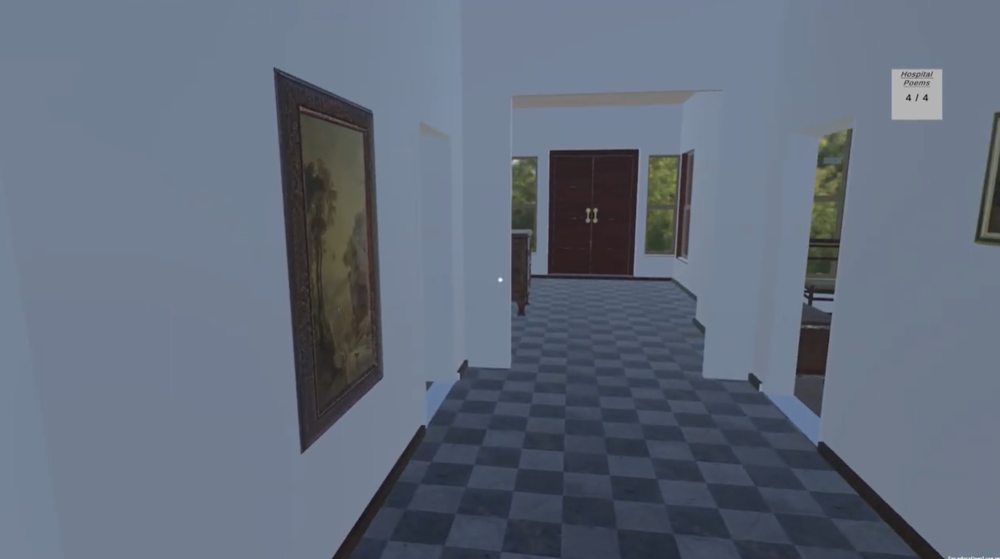
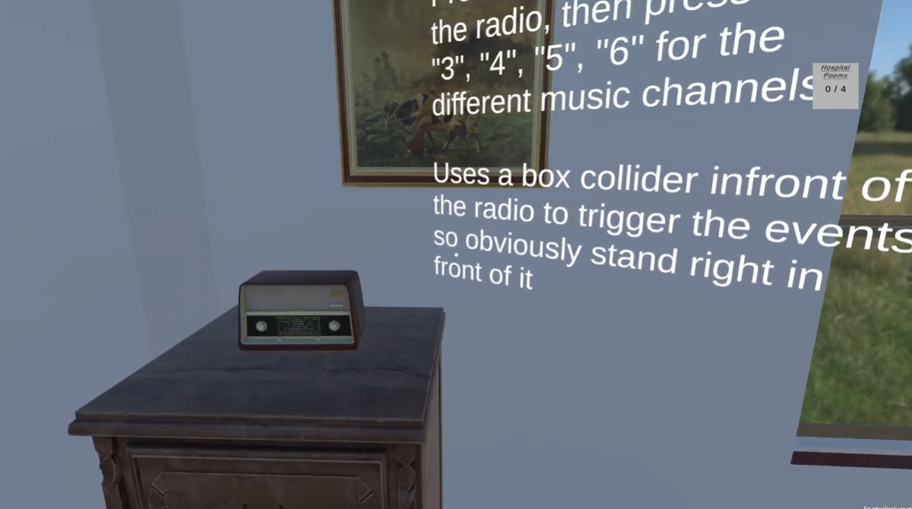
To create a realistic replica multiple stages of research were conducted:
Primary Research - Site Visit
When the project was initialised we were guided towards digital floorplans however although these were helpful to create the building outline they were very hard to read. To better understand the original building layout we organised a tour with the Senior Curator of Napier University Heritage Collections.
This allowed us to survey the Craiglockhart campus and the War Poets Collection, providing valuable insight into the hospital's history and spatial layout.
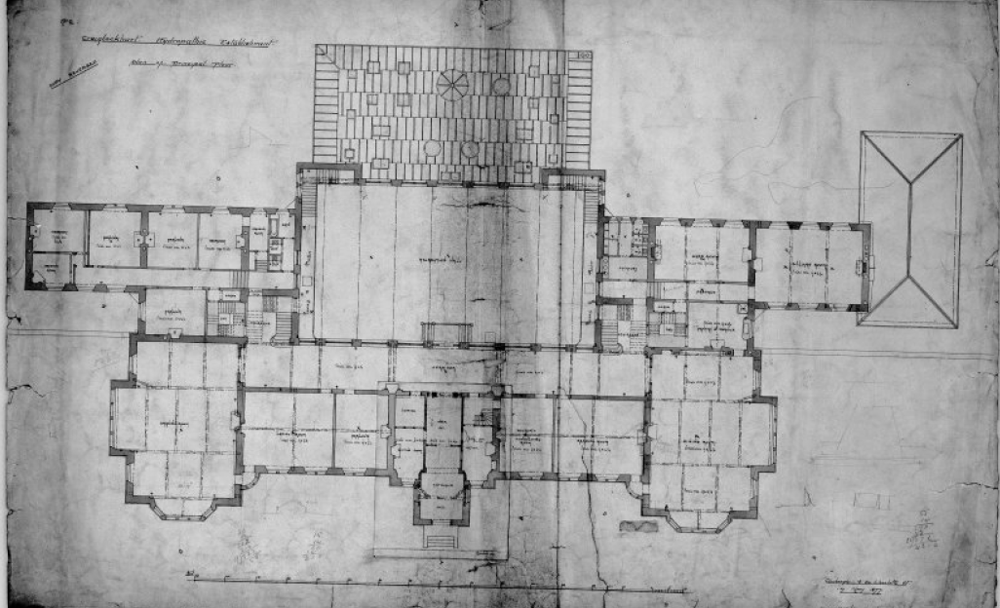
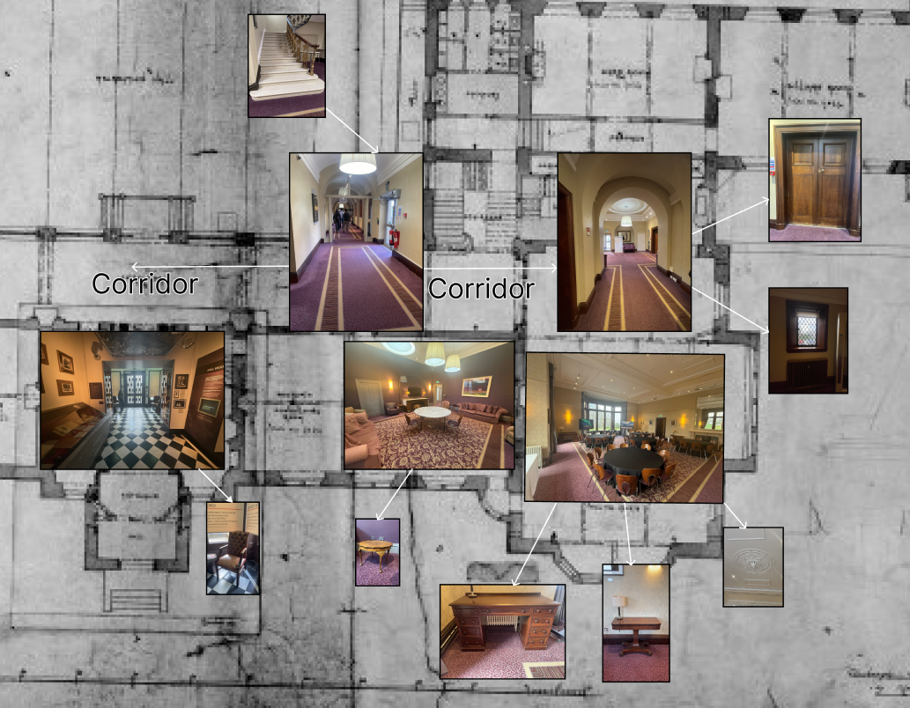
Secondary Research - Historical Sources
The meeting highlighted the significance of the Hydra, a magazine created by the patients at the war hospital. This research informed the overall understanding of the space and its daily use to inform the design of the rooms becoming the basis for our asset creation and sourcing list.
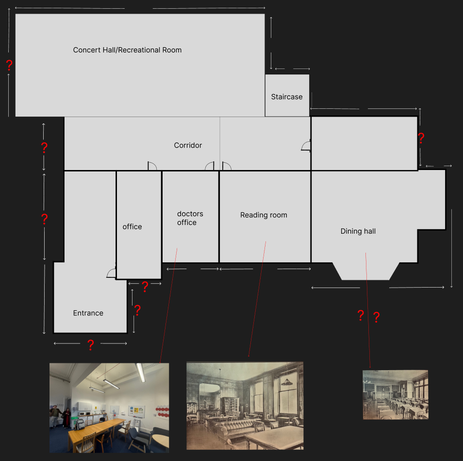
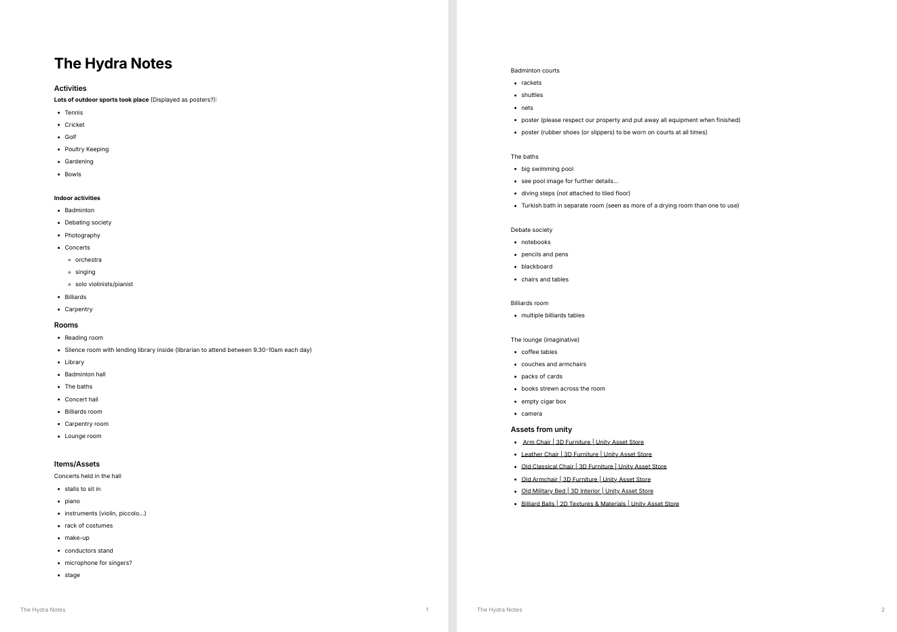
The project team had Unity experience but limited 3D modelling skills, therefore creating custom assets (as was first preferred) was causing visible project delay.
To combat this, I sourced appropriate assets from online libraries to allow the rooms to be populated efficiently and timely but without compromising historical accuracy.
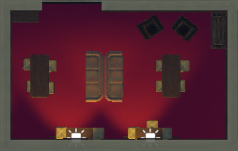
To make the project educational and allow users to interact with the building, I designed narrative touchpoints throughout the building.
Utilising my previous and further research I created informative and educational pop-ups that appear when users enter certain rooms or interact with objects.
This approach allows users to learn about the buildings history while allowing them the freedom to explore freely.
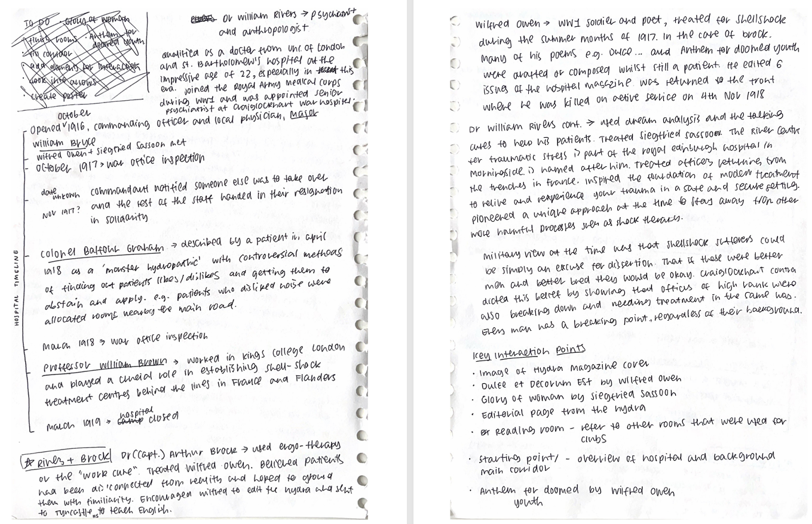
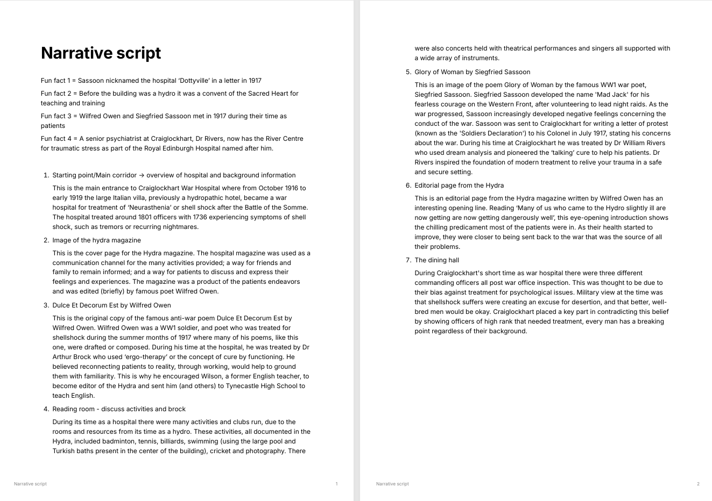
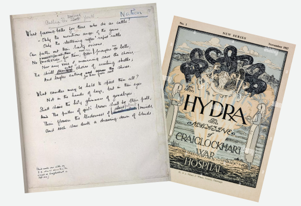
I also created posters, using Figma, to be used to market the final project
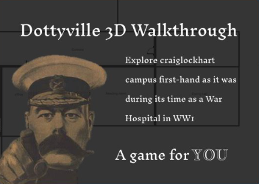
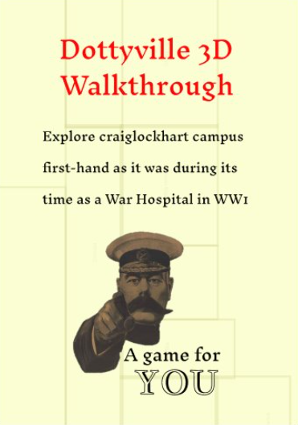